Anh muốn video dài có một người dẫn ngồi nói, đi qua từng phần, giống kênh Iman Gadzhi. Em phân tích 2 video của Iman (đo bằng máy: nhịp cắt, tỉ lệ người dẫn trên hình, lời, âm thanh), rồi chuyển khuôn đó sang Promer. Người dẫn là một nhân vật AI cố định của kênh, giọng Emma. Sản phẩm demo giữ cây son đỏ vỏ vàng có sẵn trong Promer. Dưới đây có 2 hướng để anh chọn hoặc ghép.
| Video 1: "How To Make $10,000/Month With Higgsfield" | Video 2: "Give Me 26 minutes… Claude Knowledge" | |
|---|---|---|
| Xem, dài | 980K view · 21:55 | 1,8 triệu view · 26:27 |
| Người dẫn trên hình | 63% thời lượng | 69% thời lượng |
| Mỗi góc máy giữ | trung vị 3,0 giây · 89% dưới 8 giây | trung vị 4,5 giây · 82% dưới 8 giây |
| Mỗi lần màn hình / hình minh hoạ chen vào | trung vị 5 giây | trung vị 6 giây |
| Mở đầu | Hứa số tiền, rồi người dẫn biến thành nhà sư, con mèo bằng AI ngay trong khung (0:31) | "Nếu bạn thích làm việc lặp lại thì tắt video đi", hoạt hình 3D của người dẫn |
| Chia phần | 3 thẻ đánh số, thẻ chưa tới bị che, lật dần | Bảng 10 ô có % tiến độ, chia 3 cấp |
| Nối phần | Bằng điểm yếu phần trước: "người khác vẫn phải gật đầu" | Bằng một câu cầu: "Claude càng biết bạn càng giỏi, nên mẹo sau là…" |
| Nói nhanh | 208 chữ/phút | 244 chữ/phút |
| Âm thanh | Nhạc nền suốt, thấp hơn giọng khoảng 17 dB; im gần hẳn 3 giây trước đáp án "Real or AI?" | Nhạc nền suốt, có tiếng nhấn ở gần nửa số nhát cắt |
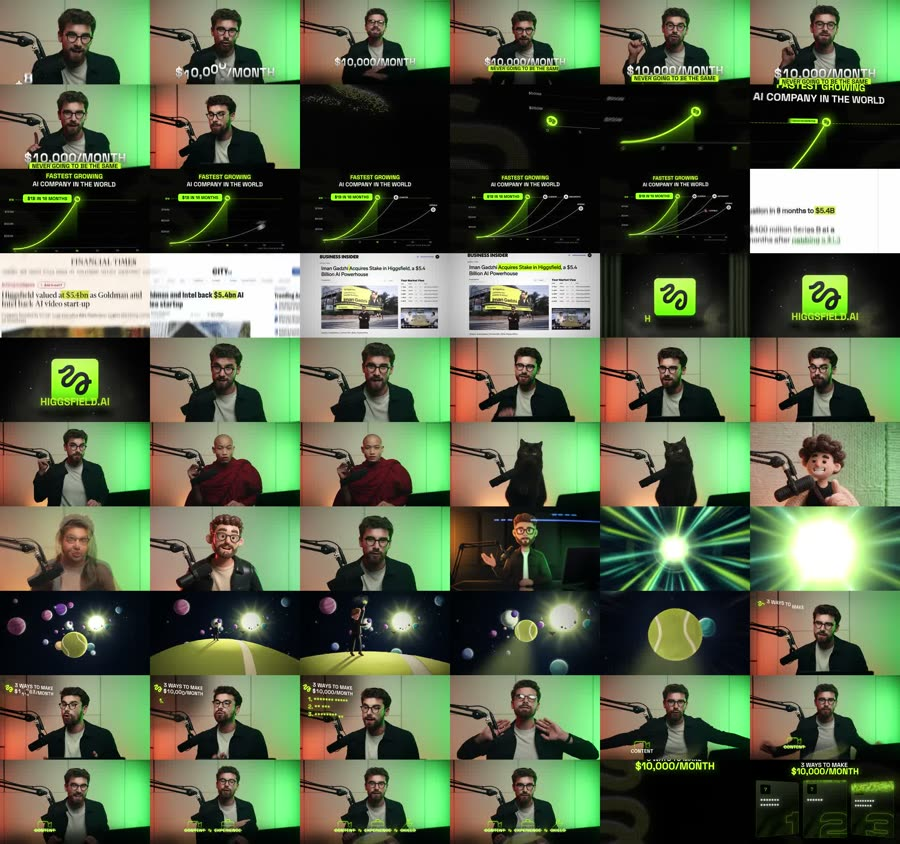
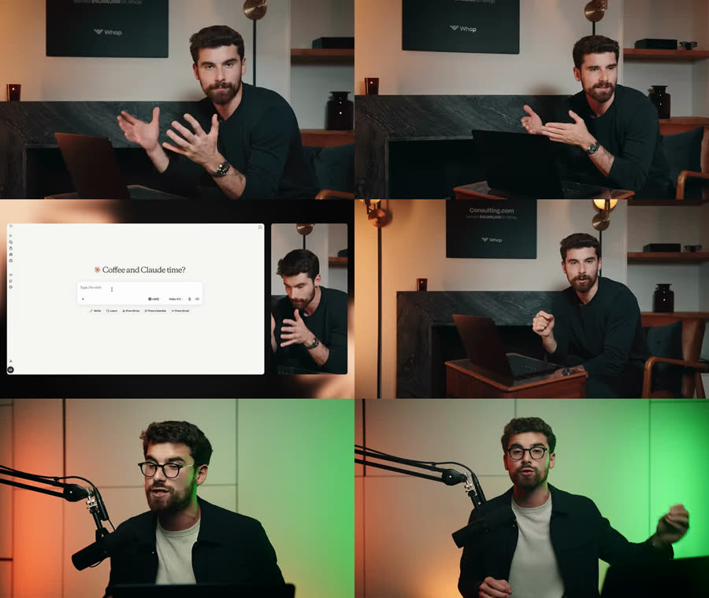
Bản phân tích đủ: 02_Reference/longform_2026-11-04/PHAN_TICH_IMAN-GADZHI_Claude.md.
| Iman làm | Promer làm | Vì sao đổi |
|---|---|---|
| Người thật (Iman) ngồi sau micro | Một người dẫn AI cố định của kênh, giọng Emma, ngồi bàn trong phòng ấm có đèn tím Promer phía sau | Kênh không có người lên hình. Người dẫn AI cũng chính là bằng chứng Promer làm được |
| Biến chính mình thành nhà sư, con mèo để khoe Higgsfield | Người dẫn nói 20 giây, rồi lộ ra cô cũng do AI tạo, giống 3 quảng cáo son vừa chiếu | Cú sốc nằm ngay trong sản phẩm, như Iman làm |
| Kể chuyện đời mình ("công ty đầu tiên 11 năm trước") | Kể chuyện của chủ shop, có nguồn. Người dẫn không tự kể đời mình | Người dẫn AI kể chuyện bản thân là bịa (luật 7) |
| Tiền: "$10.000/tháng" | Con số có nguồn về quảng cáo: số bản thử, số giây đầu, giá từ $9/tháng trên promer.ai | Không hứa thu nhập. Chỉ dùng số có bằng chứng |
| Quay màn hình Higgsfield, mặt người dẫn trong bong bóng tròn | UI Promer dựng lại trong After Effects từ màn hình thật, người dẫn trong khung dọc bên phải | Luật không quay màn hình. Ở khung nhỏ, lỗi miệng của AI khó thấy |
| Chữ mượn màu công cụ (xanh chanh Higgsfield, cam Claude) | Chữ Inter ExtraBold, nền sáng #E4EAF1, nhấn tím #873EFF | Đúng bộ màu web Promer |
| Thẻ chương / bảng % tiến độ | Thẻ chương màu Promer, che dấu sao, lật dần | Người xem thấy mình đã đi được bao xa |
| Quà MacBook, prompt miễn phí dưới mô tả | Link thẳng tới template Promer dùng trong video (ở khoảng 40% video và ở cuối) | Không có quà thì không chép. Link template đúng chiến lược hâm nóng kênh |
| Câu kết cố định "I'm rooting for you" | Một câu kết cố định của kênh Promer, dùng lại ở mọi video dài (anh chọn câu) | Thành dấu hiệu nhận ra kênh |
| Nói 208–244 chữ/phút | Emma 156–204 chữ/phút ⇒ 10 phút khoảng 1.600–2.000 chữ lời | Emma chậm hơn, bù bằng cắt góc máy dày |
Người dẫn: nữ, khoảng 28 tuổi, kiểu người làm quảng cáo (áo len hoặc sơ mi trơn, không trang sức to), khớp với giọng Emma. Anh chọn tên và mặt từ character sheet em sẽ tạo.
Phòng: ấm, gỗ, cây xanh, một dải đèn tím Promer ở tường sau, micro podcast chéo vào khung, trên bàn có đúng cây son đỏ vỏ vàng. Ba góc máy cố định, mỗi góc một ảnh khung đầu tạo bằng Nano Banana từ cùng character sheet:
| Góc | Khung | Dùng khi |
|---|---|---|
| A | Trung, chính diện, thấy micro + son trên bàn | Câu chính, khoảng 55% thời gian người dẫn |
| B | Cận 3/4 từ trái, người lệch khung | Câu nhấn, câu hỏi người xem |
| C | Rộng, thấy cả bàn và dải đèn tím | Mở phần mới, câu nối |
Cắt góc mỗi 3–4,5 giây như Iman. Vậy mỗi clip Veo chỉ cần 6–8 giây, một câu trọn. 10 phút, 65% người dẫn ⇒ khoảng 50–65 clip.
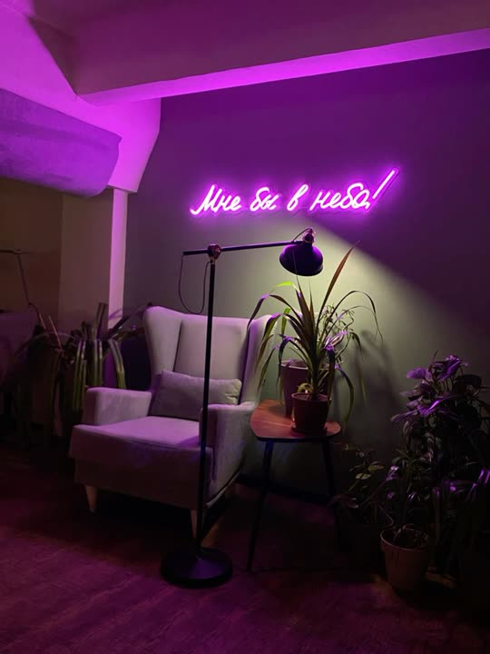
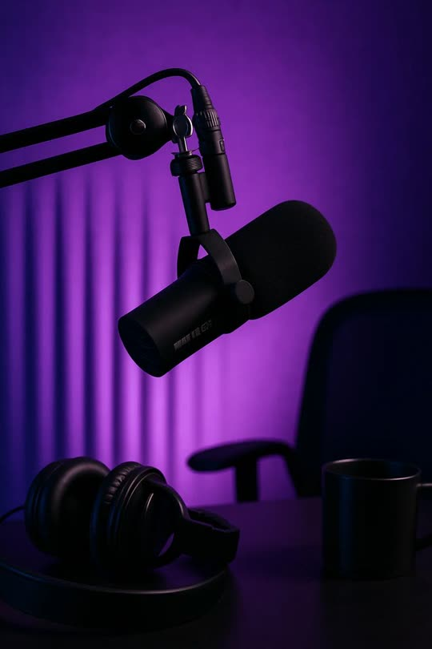
Nguồn ảnh: youtube talking head setup · cozy podcast studio purple light. Lưu đủ ở 02_Reference/pinterest_2026-11-04_longform/.
A"Cô ấy không có thật": 3 quảng cáo, 3 thành viên đoàn quay
Theo khuôn video Higgsfield: demo sốc ở đầu, 3 phần đánh số, nối phần bằng điểm yếu.
Tiêu đề thử: "I'm Not Real. Neither Are These 3 Lipstick Ads."
Một ý chạy suốt: một quảng cáo son cần cả đoàn quay (máy quay, đèn, người mẫu, người nghĩ ý tưởng). Mỗi phần, một thành viên đoàn được thay bằng một tính năng Promer.
B"3 cấp làm quảng cáo video": từ người mới tới người giỏi
Theo khuôn video Claude: bảng tiến độ %, 3 cấp khó dần, câu cầu giữa các phần.
Tiêu đề thử: "Give Me 10 Minutes, I'll Teach You 3 Levels of AI Video Ads"
Một ý chạy suốt: bảng "Ad skills" của chủ shop đi từ 0% lên 100%. Mỗi cấp mở một ô, người dẫn nói thẳng cấp đó dễ hỏng ở đâu.
| Mốc | Phần | Người dẫn nói (Emma, nháp) | Hình chen vào |
|---|---|---|---|
| 0:00–0:20 | Hook: 3 quảng cáo son | "Look at these three lipstick ads. Studio light, a real creator, a macro shot. Which one cost the most to film?" | 3 quảng cáo son dọc chạy cạnh nhau, dấu "?" nhảy theo nhạc |
| 0:20–0:35 | Lộ đáp án | "None of them were filmed. And neither was I." | Người dẫn đổi lần lượt thành 3 phong cách ngay trong khung (như Iman biến hình), im 1 giây rồi nhạc vào |
| 0:35–1:10 | Lời hứa + 3 thẻ | "A lipstick ad used to need a crew. Today I'll replace three of them, and show you where each replacement breaks." | Ảnh đoàn quay, 3 thẻ che sao: CAMERA · ACTOR · STRATEGIST |
| 1:10–3:40 | Phần 1: thay đội máy + đèn (Ad Animation) | "Your product photo already has the light. You just need it to move." | UI Ad Animation dựng lại, son mở nắp trồi lên. Chỗ hỏng: chữ trên nắp chảy khi máy xoay, cách tránh |
| 3:40 | Nối bằng điểm yếu | "Beautiful. But nobody trusts a lipstick until they see it on real lips." | Thẻ 2 lật |
| 3:50–4:10 | Link template | "The exact template is linked below." | Chỉ xuống mô tả (khoảng 40% video) |
| 4:10–6:30 | Phần 2: thay người mẫu (AI UGC Ads) | "This is where most AI UGC looks fake. Here's the one thing to check." | UI UGC dựng lại, creator tô son. Chỗ hỏng: tay cầm sai son, miệng lệch lời |
| 6:30–6:50 | Câu đố "Real or AI?" | "Quick test. Real or AI?" | 2 clip UGC cạnh nhau, im 2–3 giây rồi lật đáp án |
| 6:50–9:00 | Phần 3: thay người nghĩ ý tưởng (Video Ad Clone) | "Your best ad gets tired. Don't guess the next one, clone what's already working." | UI Video Ad Clone dựng lại, kịch bản 4 cảnh. Chỗ hỏng: clone y nguyên chữ của người khác |
| 9:00–9:50 | Tổng kết + câu kết cố định | "Camera, actor, strategist. One app. Try it on your own product." | 3 thẻ sáng lại, logo, link template |
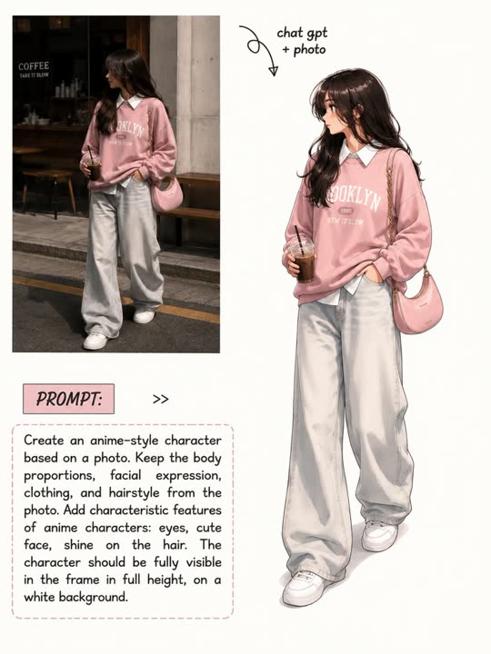
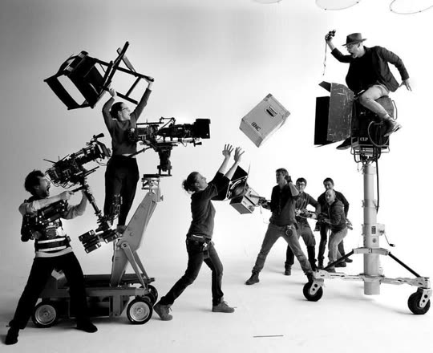
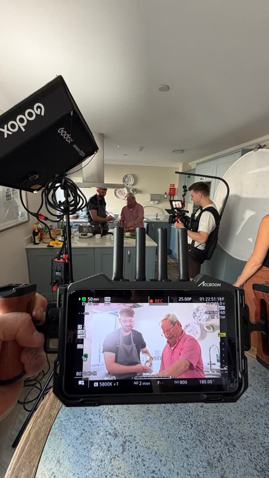
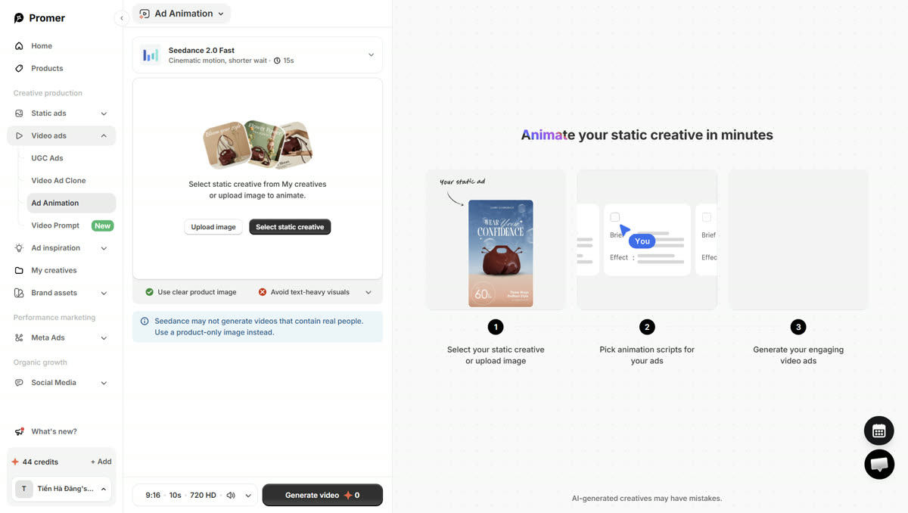
| Mốc | Phần | Người dẫn nói (Emma, nháp) | Hình chen vào |
|---|---|---|---|
| 0:00–0:25 | Hook "đuổi khéo" | "If you're happy paying for a new photoshoot every time an ad gets tired, you can click away. The next ten minutes are for people who want out of that." | Người dẫn góc A, rồi cắt nhanh 3 quảng cáo son. Cuối câu lộ: người dẫn cũng do AI tạo |
| 0:25–1:00 | Bảng 3 cấp | "Three levels. Each one takes more effort, and each one pays back more." | Bảng "Ad skills 0%" màu Promer, 3 ô che sao |
| 1:00–3:30 | Cấp 1: một tấm ảnh thành video (Ad Animation) | "Level one. You already have the photo. Make it move." | UI Ad Animation trong khung lớn, người dẫn khung dọc bên phải. Bảng lên 33% |
| 3:30 | Câu cầu | "A moving photo stops the scroll. It doesn't make anyone believe you. That's level two." | |
| 3:40–4:00 | Link template | "Every template from this video is linked below." | Khoảng 40% video |
| 4:00–6:30 | Cấp 2: người thật nói về son (AI UGC Ads) | "Level two. A real-looking person, your real product, a script that sounds human." | UI UGC, chọn avatar, kịch bản. Chỗ hỏng: avatar nói như đọc. Bảng lên 66% |
| 6:30–9:00 | Cấp 3: học từ quảng cáo đang thắng (Ad Library + Video Ad Clone) | "Level three is uncomfortable. You stop guessing and start copying the structure of ads that already run for months." | Thư viện quảng cáo thắng, clone cùng khuôn sang cây son. Bảng lên 100% |
| 9:00–9:50 | Tổng kết + câu kết cố định | "Start at level one today. Most stores never get past it." | Bảng 100%, logo, link template |
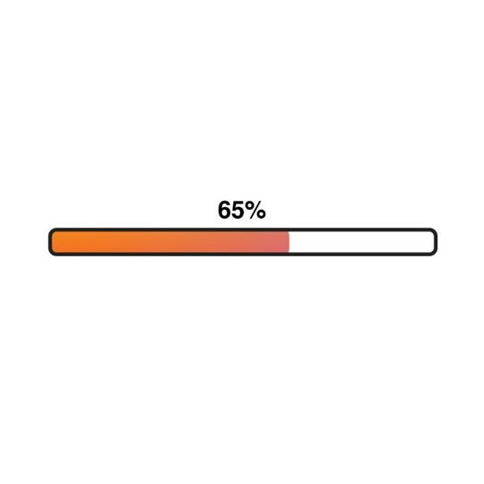
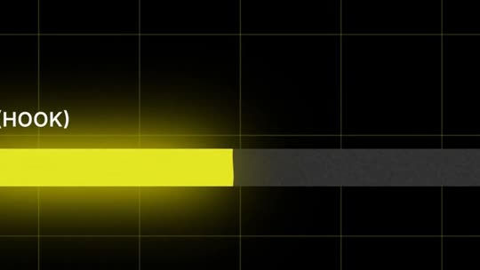
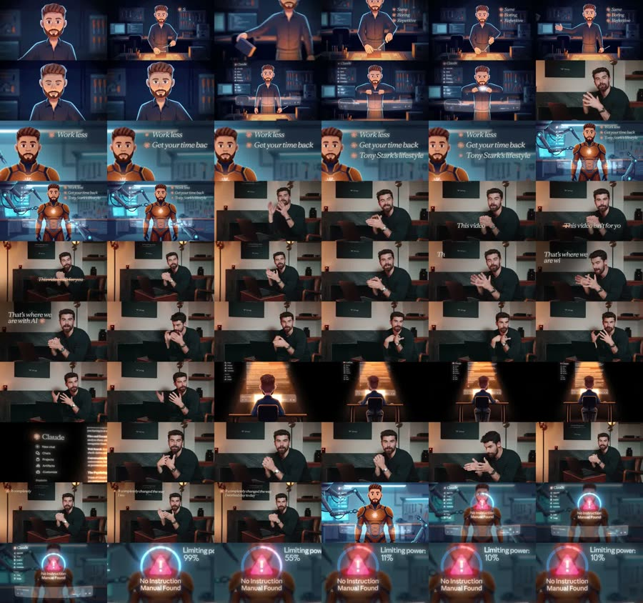
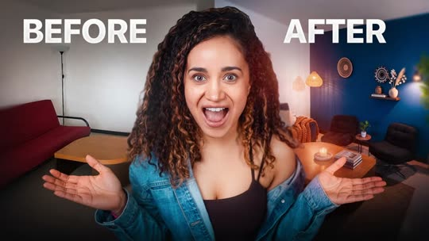
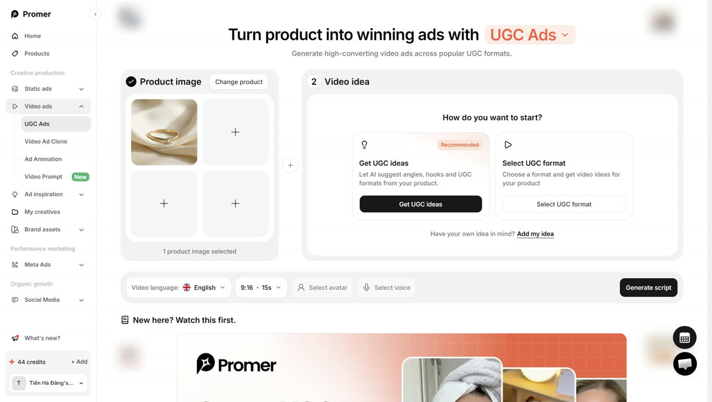
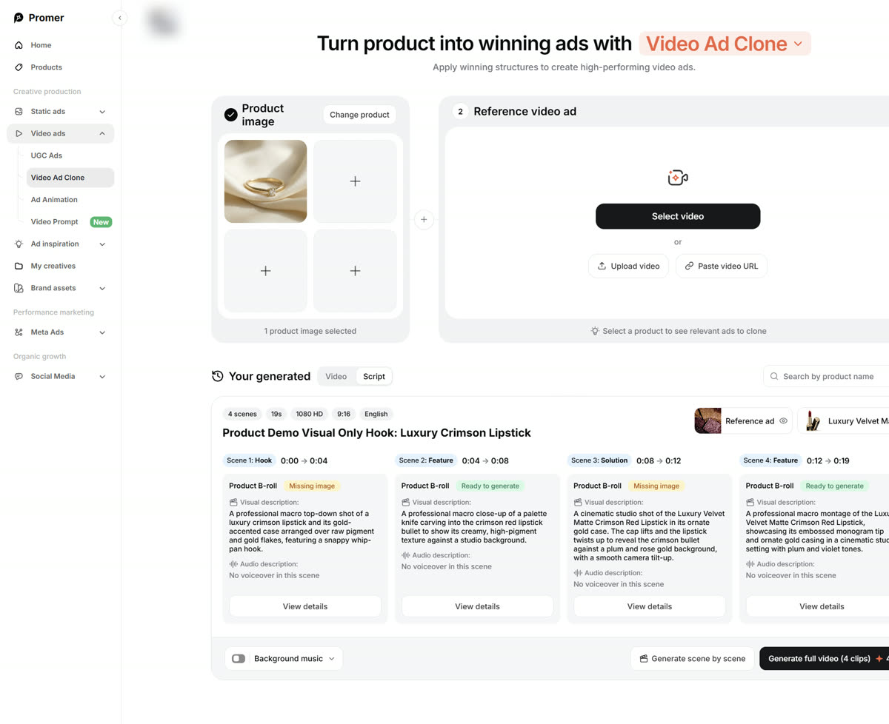
| A: "Cô ấy không có thật" | B: "3 cấp" | |
|---|---|---|
| Vì sao người xem dừng lại | Đoán quảng cáo nào quay thật, rồi lộ người dẫn cũng là AI: hai cú lật | Bị "đuổi khéo", ai ở lại thấy video dành cho mình |
| Họ mang về được gì | Mỗi tính năng thay ai trong đoàn quay, và chỗ hay hỏng của từng cái | Biết shop mình đang ở cấp nào, việc tiếp theo là gì |
| Xem xong làm gì | Thử đúng một tính năng thay cho phần mình đang thiếu | Làm cấp 1 ngay hôm nay bằng template trong mô tả |
| Rủi ro | Hook chỉ chạy khi 3 quảng cáo trông như quay thật | Hook kiểu "đuổi khéo" giống Iman, phải viết lại cho khác hẳn |
| Trùng với video đã có | Trò đoán "cái nào quay thật" đã nằm trong plan L01 cũ, chưa lên kênh | Chưa có video nào dùng bảng cấp độ |
Em nghiêng về A cho phần mở đầu (2 cú lật mạnh hơn), B cho phần thân (bảng % giữ người xem tốt hơn). Anh có thể ghép: hook + lộ người dẫn của A, rồi bảng 3 cấp của B.